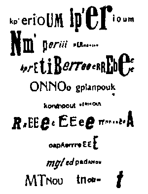

|
Raoul Hausmann: Poselství
Prou� papíru. Padá odnikud na zem. Potištìn: M R 4, 13 C M. Èerná písmena, bílı papír. Kdo psal to poselství? Co znaèí M R ? Proè 4. Co 13 CM. Centimetrù? Kdo padl pad prou� pap potiš� èernımi písmeny. Odkudpak padl pád, M R 4. 4 M nebo 4 R? Nebo M 4 a �ádné R. Nebo 4 R bez 4 M? 13. Co je 13 C M ? 13? 13! Leè: C M ? M C, M R, dvakrát M. Snad Merkur Mars nebo M. M. R. C. 4. 13. Jaké to poselství se o mne tøe Odnìkud na bílém papíøe. Je to psáno ve hvìzdách? Obyèejnımi písmeny je to psáno. Vidím, co psáno jest. 13 M, 4 C, M R. C 4, C R, C M M C, 4 R, 13 M. Jak pak, odKUD? M, M, m, m – Raoul Hausmann: Optofónická báseò  |